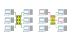

Conmutacion
 Descargar
Descargar 

Es la conexión que realizan los diferentes nodos que existen en distintos lugares y distancias para lograr un camino apropiado para conectar dos usuarios de una red de telecomunicaciones. La conmutación permite la descongestión entre los usuarios de la red disminuyendo el tráfico y aumentando el banda ancha. Es una tecnología que alivia la congestión en las LAN Ethernet, reduciendo el tráfico y aumentando el ancho de banda.
Conmutación de circuito
Es aquella en la que los equipos de conmutación deben establecer un camino físico entre los medios de comunicación previa a la conexión entre los usuarios. Este camino permanece activo durante la comunicación entre los usuarios, liberándose al terminar la comunicación. Ejemplo: Red Telefónica Conmutada.
{kind=link}
Su funcionamiento pasa por las siguientes etapas: solicitud, establecimiento, transferencia de archivos y liberación de conexión.
Conmutación de mensajes
Este método era el usado por los sistemas telegráficos, siendo el más antiguo que existe. Para transmitir un mensaje a un receptor, el emisor debe enviar primero el mensaje completo a un nodo intermedio el cual lo encola en la cola donde almacena los mensajes que le son enviados por otros nodos. Luego, cuando llega su turno, lo reenviará a otro y éste a otro y así las veces que sean necesarias antes de llegar al receptor. El mensaje deberá ser almacenado por completo y de forma temporal en el nodo intermedio antes de poder ser reenviado al siguiente, por lo que los nodos temporales deben tener una gran capacidad de almacenamiento.
Conmutación de paquetes
El emisor divide los mensajes a enviar en un número arbitrario de paquetes del mismo tamaño, donde adjunta una cabecera y la dirección origen y destino así como datos de control que luego serán transmitidos por diferentes medios de conexión entre nodos temporales hasta llegar a su destino. Este método de conmutación es el que más se utiliza en las redes de ordenadores actuales. Surge para optimizar la capacidad de transmisión a través de las líneas existentes.
Al igual que en la conmutación de mensajes, los nodos temporales almacenan los paquetes en colas en sus memorias que no necesitan ser demasiado grandes.
Modos de conmutación
Circuito Virtual
- Cada paquete se encamina por el mismo circuito virtual que los anteriores.
- Por tanto se controla y asegura el orden de llegada de los paquetes a destino
- Cada paquete se encamina de manera independiente de los demás.
- Por tanto la red no puede controlar el camino seguido por los paquetes, ni asegurar el orden de llegada a destino.